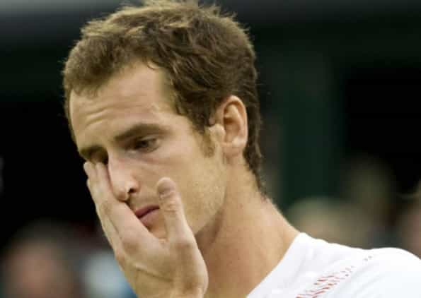

< < < Back
World’s Number One Male Tennis Player Says Women Do Not Deserve “Equal” Pay – Return Of Kings
Men’s world number one (and therefore humanity’s world number one) tennis player Novak Djokovic has claimed that women do not deserve equal pay in tennis. With smaller revenue streams coming from the women’s game, Djokovic had argued that men were entitled to more remuneration. At present, the major tournaments feature separate male and female fields at the same event, a situation that many feel benefits the less popular WTA, which can piggyback off the higher prestige of the men’s game, the ATP.
Djokovic is on more than just solid ground. Once male and female tournaments are held at different times or in different locations, which happens most of the time for events below Grand Slam and Masters level, there is a marked disparity in crowd numbers, greatly favoring the ATP. Even in combined events, men’s final tickets sell at higher prices than those for the women’s decider, reflecting much higher demand. In earlier matches at Grand Slams, men’s contests have far less empty seats, even when they are held in much larger arenas.
In addition, matters of crowd numbers and television audiences do not take into account the fact that the fields are separate to begin with. So-called equal pay is an artificial construct because the female players, aside from very unpopular mixed doubles events, never compete against superior male players (and never one-on-one). If they did, even a doctored version of equal pay could not come into the picture.
The gulf between the sexes is so bad in tennis, as Roosh recently demonstrated, that notoriously undisciplined, chain-smoking, and beer-guzzling journeyman Karsten Braasch throttled the Williams sisters when he was in his 30s and they were pristine physical specimens, at least by female standards. Plus, each sister only had to play one set, whereas he played two.
Yes, Djokovic backtracked but we should celebrate his public honesty

Well-known crybaby Andy Murray attacked Djokovic’s comments, forever sealing his status as an effeminate white knight.
As the recipient of millions in sponsorship funds, and being publicly criticized by pathetic white knights like world number two Andy Murray and a host of female players supported by powerful media interests, Djokovic was forced to backtrack. Some may bemoan this, but I choose to focus on the positives. One of the highest-profile male athletes on the planet decided to speak out on a topic of gender-based lunacy. To boot, he did so when he was in the prime of his career, ranked number one in the world and by far the most accomplished player of the last five years, easily surpassing Federer, Nadal, and Murray during that time.
The Serbian champion’s forthrightness is an anomaly in men’s tennis, where those speaking out against the fraud of equal pay are usually less well-known players, such as Gilles Simon, Xavier Malisse, and Sergiy Stakhovsky. Nevertheless, Simon in particular claims that many in the men’s locker room agree with him. This idea is backed up by Malisse’s publicly stated preference in 2012 that Simon, not him, take up the issue so he could avoid being called sexist. It is these less famous men who suffer the most from equal pay, as maintaining a tennis career is terribly expensive, requiring even unknown players to fly around the world, pay for coaches, and live in hotels for most of the year. Money that should be going to them is invariably doled out to inferior female players in the name of equality.
Novak Djokovic’s outspokenness is also significant because it demonstrates to anyone following after him that a person will not die from challenging the gender status quo. Though he did end up apologizing, he broke a cardinal rule of celebrityhood: always praise the “achievements” of women and do not put them in proper perspective. Yet the effect on his career, at least from my vantage point and that of most other commentators, will be minimal. Speaking out against feminism may seriously skin the noses of male athletes and others with less money and fame than a Djokovic, but it is not impossible for them to come through the witch-hunt that follows.
It’s time to throw our weight behind men who tell the truth
We are meant to believe that Maria Sharapova has as many tennis “skills” as a Djokovic or Federer.
Do not just admire other men for their physical prowess, sporting skills, business acumen, or other talents. Admire them for what they stand for, especially when they challenge oft-repeated lies about equality and other political fictions. It is fine for someone to dedicate their life to a particular form of mastery, but what good is it to society if they do not use their accomplishments to make positive social change? No, Djokovic is not a Roosh or a Donald Trump and, yes, he did back down. But he is certainly a cut above an Andy Murray and countless other ball-less sports stars and celebrities, those “men” who never bother trying to say anything controversial. In fact, many of these individuals go out of their way to support political correctness in order to pad their wallets and fan bases.
From professional sports to the workplace, incremental change in challenging feminism is something we have to accept. Just as the retrograde influence of feminism has creeped up on society, so too will the reversal of it require time, in the short-term at least. Novak Djokovic’s comments need to be seen as a useful contribution to our cause, however insufficient they may at first appear.
Read More: What Women’s Tennis Says About “Equal” Pay